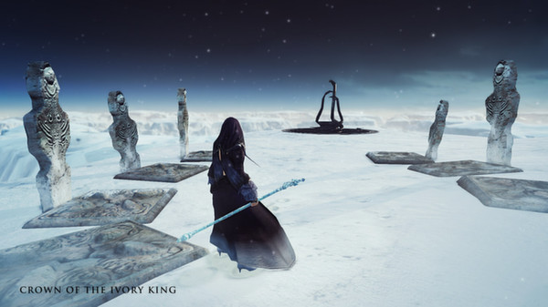
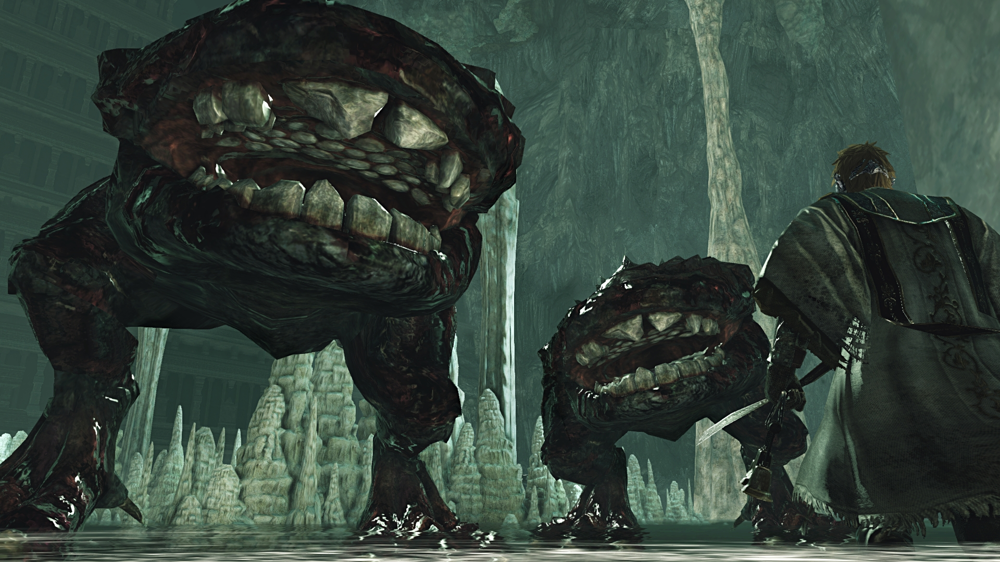

Origem do Dark souls 2
Dark souls 2 é um jogo online de RPG medieval criado em 2014 pala Tencent Games. O mesmo teve sua criação após o grande sucesso do Dark Souls 1, porem no segundo jogo da trilogia o diretor responsavel pela criação do game foi mudado por motivos internos da empresa, que eventualmente resutou em grandes mudanças no game. Na qual essas mudanças que trazem a discussão sobre o jogo ser bom ou ruim
Pontos Negativos do Dark souls 2
Uma boa parte dos fãs da trilogia acredita que o Dark Souls 2 foi criado "sem criatividade", o que usam para tal argumento é o fato de muito dos Bosses serem repetidos, como o combate contra o Dragon Rider e a luta contra Os Dois Dragon Rider. Além de também possuir varias replicas do bosses do Dark Souls 1
Outro ponto negativo, também muito visado, é a falta de ligação entre as áreas, um classico exemplo é a saida do pico terroso através do elevador que sobe até Iron Keep, que na teoria era pra ser o Submundo ou uma área bastante inferior a altitude do mar. Essa falta de interligação entre as áreas foi muito questionadas entre os players que vieram do Dark Souls 1, já que o mesmo apresentava uma extrema ligação entre as áreas que faziam sentido.
Pontos Positivos
Assim com há bastante pontos negativos, à de se dizer o mesmo dos positivos. O Dark Souls 2 trouxe uma mecanica um tanto quanto interresante que é o power stance, que nada mais é que a combinação dos golpes de duas armas, uma em cada mão, trazendo assim uma variedade maior de combinações paara o jogo
O diretor do Dark Souls 2 reconheceu que vacilou um pouco com os fãs, e por isso, na segunda versão do game, a versão scholar of the first sin, ele proporcionou diversas mudanças na mecanica geral do jogo. Além disso trouxe juntamente com essa versão as DLC's, sendo elas a
Crown of the Ivory King

Crown of the Old Iron King

Crown of the Sunken King

que são de longe uma das partes mais marcantes do game, tendo desde áreas boas e inovadoras até os bosses mais bem trabalhados, além é claro de parte da historia do Dark Souls 1.
Desfecho
No geral esse jogo é o famoso 8 ou 80, ou você é apaixonado nele ou você odeia ele, acredito que aqueles que odeiam, deviam dar uma oportunidade para o jogo é se jogar mais dentro do universo do Dark Souls 2. Dizendo por mim, eu simplesmente adoro esse jogo acho que cada detalhe de diferente entre ele e o seu antecessor é o que te torna único e inigualavel.